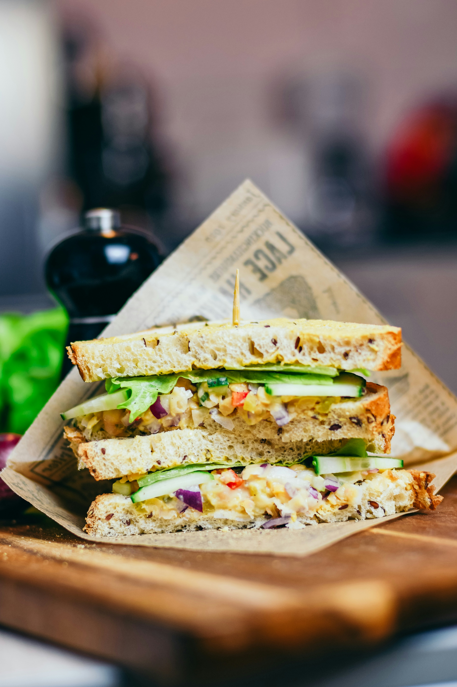

Chicken sandwich

Description
This chicken sandwich is a simple yet delicious meal, featuring juicy grilled chicken breast layered with fresh
lettuce and ripe tomato slices, all tucked between perfectly toasted bread with a spread of creamy mayonnaise.
It’s filling, easy to make, and ideal for a quick lunch, evening snack, or a light dinner when you want
something tasty without spending too much time in the kitchen.
Ingredients
- Chicken breast
- Bread
- Mayonnaise
- Lettuce leaves
Steps
- Season chicken breast with salt, pepper, and your choice of spices. Grill or pan-fry until fully cooked,
then slice or shred it.
- Toast two slices of bread or a sandwich bun until golden brown.
- Spread mayonnaise or any preferred sauce on the bread. Place lettuce, tomato slices, and the cooked chicken
on it.
- Top with cheese (optional) and the second slice of bread. Press lightly, cut in half, and serve warm.
Home